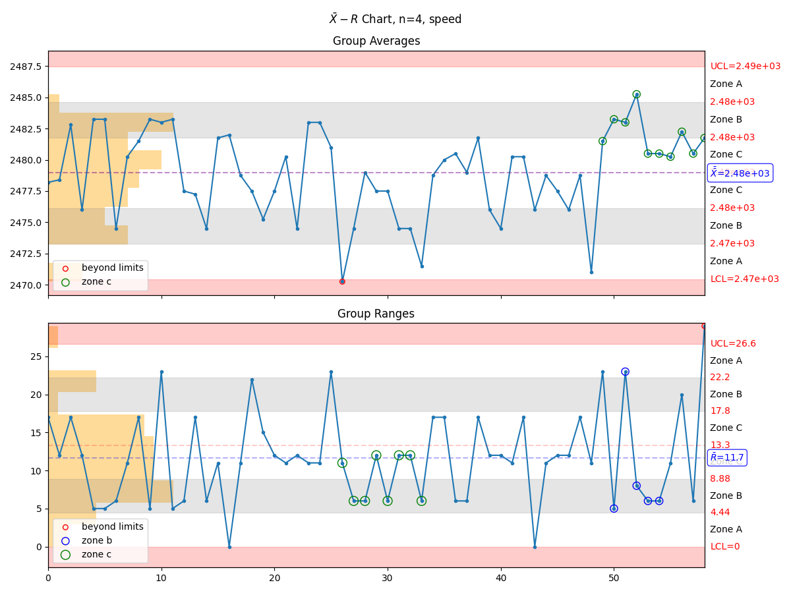
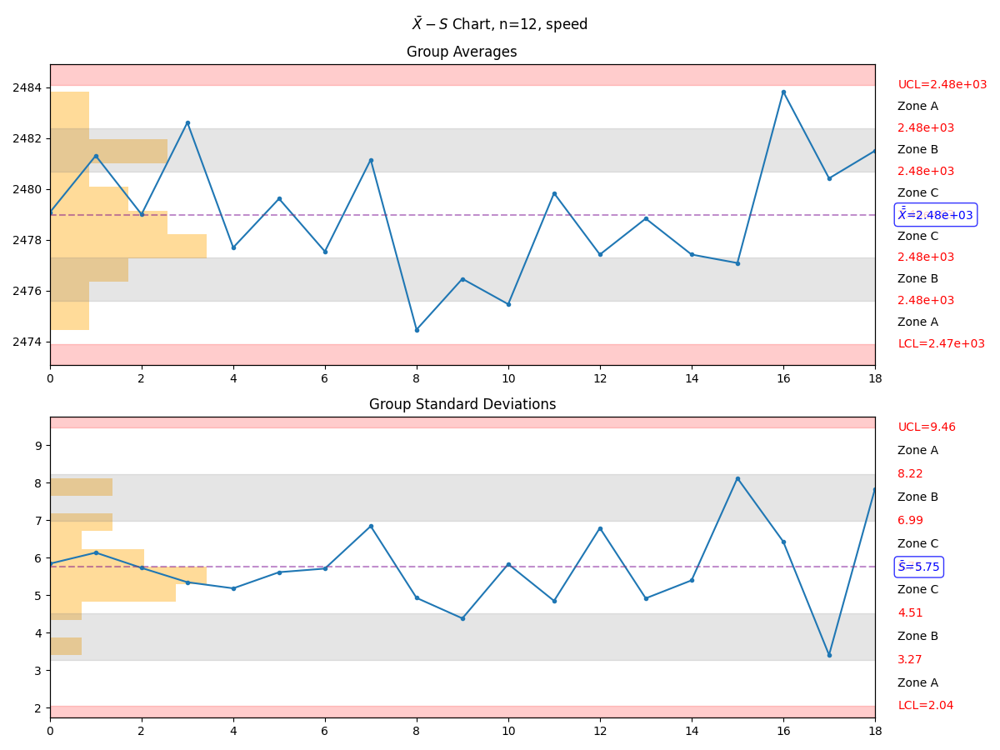

Plotting¶
The most useful features of manufacturing come in the form of the highly
information-dense plotting tools.
Ppk Plot¶
The manufacturing.ppk_plot() takes all of the data - not just a sample - and determines the process
capability. This is not a snapshot in time but a look at the entire history. Careful,
which this can be can be deceiving!
The :meth:manufacturing.ppk_plot will estimate the distribution based on the input
data, calculate the Ppk, mean, standard deviation, and the estimated % out of control
for each parameter. The function will also generate a warning if the data appears
to be non-normally distributed.
import manufacturing as mn
# the 'data' variable contains a list of integers, floats,
# numpy array, or pandas Series
mn.ppk_plot(data, upper_specification_limit=3.3, lower_specification_limit=3.1)
If manufacturing is used in a jupyter notebook or similar environment, then
the plot will display automatically. Optionally, you can pass a matplotlib.figure.Figure
instance in order to more directly manipulate the underlying matplotlib.figure.Figure.
import manufacturing as mn
import matplotlib.pyplot as plt
fig, ax = plt.subplots()
mn.ppk_plot(data,
upper_specification_limit=3.3,
lower_specification_limit=3.1,
figure=fig)
ax.set_xlim(3.0, 3.5) # manipulate the axis as desired
Cpk Chart¶
The manufacturing.cpk_plot() gives snapshots of process capability. In most cases, the average
Cpk value should be close to the overall Ppk value. If not, then the process may
not be in control.
import manufacturing as mn
# the 'data' variable contains a list of integers, floats,
# numpy array, or pandas Series
mn.cpk_plot(data,
upper_specification_limit=7.4,
lower_specification_limit=-7.4,
subgroup_size=10)
Zone Control Chart¶
Perhaps the most useful chart is the manufacturing.control_plot(), also known as a
Zone Control Plot. This plot will highlight up to 8 different rules or violations
based on the input data set. If a control chart rule is not violated, then it will
not be placed on the chart.
There are three different types of control charts defined within manufacturing:
manufacturing.x_mr_chart()for small data sets
manufacturing.xbar_r_chart()for subgroups between 2 and 10, inclusive
manufacturing.xbar_s_chart()for subgroups larger than 11, inclusive
Using the manufacturing.control_plot() function will automatically select the appropriate
control chart type based on the number of data points supplied.
Violation |
Pattern |
beyond limits |
Point is beyond the limits |
zone a |
2 out of 3 consecutive points in zone a or beyond |
zone b |
4 out of 5 consecutive points in zone b or beyond |
zone c |
7 or more consecutive points on one side of the average (in zone c or beyond) |
trend |
7 consecutive points trending up or trending down |
mixture |
8 consecutive points with no points in zone c |
stratification |
15 consecutive points in zone c |
over-control |
14 consecutive points alternating up and down |
import manufacturing as mn
# the 'data' variable contains a list of integers, floats,
# numpy array, or pandas Series
mn.control_plot(data)
Depending on the data set, the above command could result in the creation of an \(X-mR\) chart, \(\bar{X}-R\) chart, or \(\bar{X}-S\) chart.
 Anatomy of a Control Chart¶
A control chart is an information-dense representation of data coming
off of testers. The manufacturing control chart has several sections
that warrant further explanation:
chart type - the chart type, usually based on recommended groupings
group size - when present, indicates how many samples were grouped to present each datapoint
distribution histogram - the statistical distribution of the data
more data indicator - when present, indicates that data was truncated before display in order to to not present so much information that the plot becomes unreadable
out of control indicators - when present, indicate that the process is out of control or nearly so
upper control limit - the upper control limit as calculated from the data on the plot
avg value - the average value as calculated from the data on the plot
lower control limit - the lower control limit as calculated from the data on the plot
Additional Chart Types¶
p-Chart¶
One may utilize the manufacturing.p_chart(), which requires a pandas.DataFrame rather than a pandas.Series.